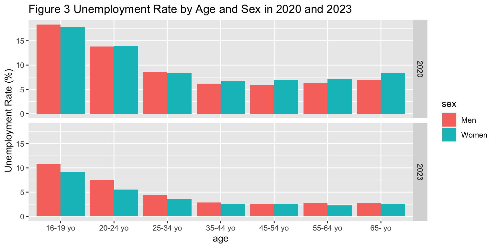
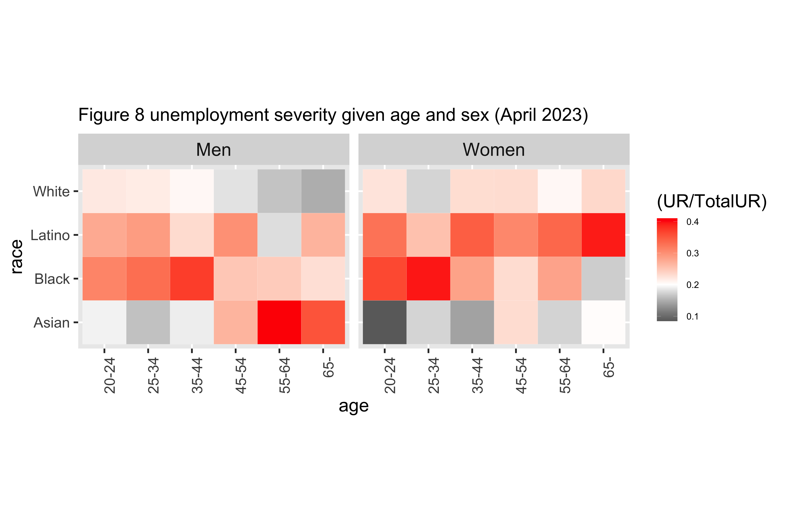
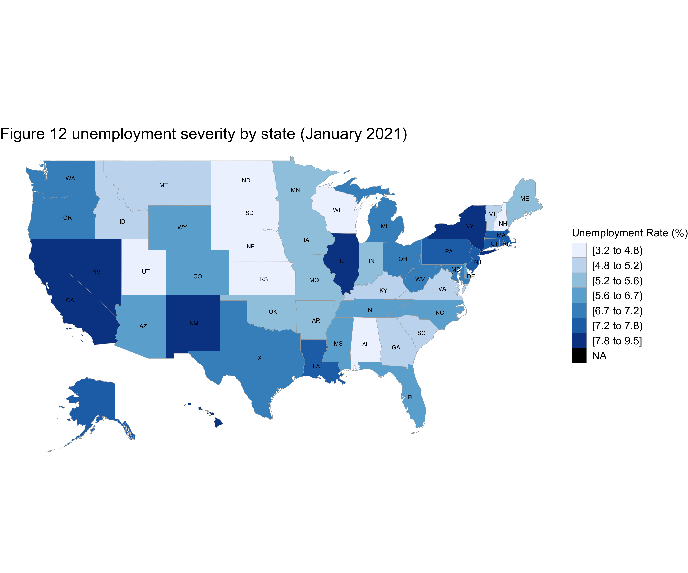

Code
knitr::opts_chunk$set(warning = FALSE, message = FALSE)
knitr::opts_chunk$set(fig.width=20, fig.height=20)Our project focuses on unemployment rates during COVID-19 pandemic. According to WHO, COVID-19 was declared a Public Health Emergency of International Concern (PHEIC) on 30 January 2020 and the Public Health Emergency of International Concern (PHEIC) was lifted on 5 May 2023. Therefore, this project will use data from January 2020 to May 2023 to explore the potential impact of the pandemic on unemployment rates.
knitr::opts_chunk$set(warning = FALSE, message = FALSE)
knitr::opts_chunk$set(fig.width=20, fig.height=20)library(readr)
library(readxl)
library(lubridate)
library(tidyr)
library(ggplot2)
library(vcdExtra)
library(dplyr)
library(tidyr)
library(tibble)
library(ggplot2)
library(vcd)
#install.packages("choroplethr")
library(choroplethr)
#install.packages("choroplethrMaps")
library(choroplethrMaps)UR = read_csv('data/UR.csv', show_col_types = FALSE)%>%
mutate(time = ym(paste(year, month, sep = "-"))) %>%
filter(time >= ymd('2020-01-01') & time < ymd('2023-06-01'))
COVID = read_csv('data/Monthly_COVID-19_Death_Rates_per_100_000_Population_by_Age_Group__Race_and_Ethnicity__Sex__and_Region.csv', show_col_types = FALSE) %>%
mutate(time = mdy(data_period_start))%>%
filter(time >= ymd('2020-01-01') & time < ymd('2023-06-01'))
SP500 = read_excel("data/PerformanceGraphExport.xls", skip=6)%>%
rename(Effective_date = 'Effective date', SP500 = 'S&P 500')%>%
mutate(time = ymd(Effective_date))%>%
filter(time >= ymd('2020-01-01') & time < ymd('2023-06-01'))%>%
mutate(group = format(Effective_date, format = "%b %Y"))overallURtrend = UR %>%
filter(adjusted==TRUE, sex=="Both", race=="All", age=="All", mari=="All") %>%
mutate(value = as.numeric(value))%>%
select(time, "Unemployment Rate (%)" = value)
overallCOVIDtrend = COVID %>%
filter(jurisdiction_residence=="United States", group=="All")%>%
select(time, 'COVID Death Rate (per 100,000 population)' = crude_rate)
overallSP500trend = SP500 %>%
group_by(group)%>%
summarise("S&P 500 index" = mean(SP500)) %>%
mutate(time = my(group))%>%
ungroup()%>%
select(time, "S&P 500 index")trend_df <- overallURtrend %>%
left_join(overallCOVIDtrend, by = "time") %>%
left_join(overallSP500trend, by = "time") %>%
arrange(time)
#Since the initial value of COVIDdeathRate is 0, which is problematic for indexing the value, we make the initial value of COVIDdeathRate 0.01 to fix the problem.
trend_df$'COVID Death Rate (per 100,000 population)'[1] = 0.01
trend_df <- trend_df %>%
pivot_longer(cols = -1,
names_to = "type",
values_to = "value")
trend_df <- trend_df%>%
group_by(type) %>%
mutate(index = round(100*value/value[1], 2))%>%
ungroup()
tail(trend_df)# A tibble: 6 × 4
time type value index
<date> <chr> <dbl> <dbl>
1 2023-04-01 Unemployment Rate (%) 3.4 97.1
2 2023-04-01 COVID Death Rate (per 100,000 population) 1.55 15500
3 2023-04-01 S&P 500 index 4121. 126.
4 2023-05-01 Unemployment Rate (%) 3.7 106.
5 2023-05-01 COVID Death Rate (per 100,000 population) 1.06 10600
6 2023-05-01 S&P 500 index 4146. 126. Note: Due to the explosive growth of COVIDdeathRate with respect to its initial value, we choose not to plot the unemployment rate, COVID-19 death rate, and S&P 500 trends in a single graph. As its line will dominate the entire chart even after indexing, it can make it difficult to observe and analyze the other two indicators. In such a situation, we decided to plot them separately using facets.
trend_df$type <- factor(trend_df$type, levels = c("COVID Death Rate (per 100,000 population)", "Unemployment Rate (%)", "S&P 500 index"))
ggplot(trend_df, aes(time, value)) +
geom_line() + geom_point(size = 2) +
scale_x_date(limits = c(as.Date("2020-01-01"), as.Date("2023-06-30")), date_breaks = "6 months", date_labels = "%b %Y") +
facet_grid(type~ .,scales = "free_y") +
geom_smooth(method = "loess", span = .25, se = FALSE, formula = y ~ x) +
theme_grey(30) +
theme(strip.text = element_text(size = 20)) +
labs(title = "Figure 1 Trends in COVID-19 Death Rate, Unemployment Rate, and S&P 500 Index") +
theme(plot.title = element_text(size = 30))
Based on Figure 1, we can observe that the COVID-19 mortality rate experienced three distinct peaks, occurring around the middle of 2020, early 2021, and late 2021. In contrast, the unemployment rate surged in the middle of 2020, coinciding with the first peak in mortality rate, but then gradually declined and stabilized, showing no significant impact from the second and third waves of the pandemic. As for the S&P 500, it also experienced a sharp decline during the first peak in mortality rate but continued to grow afterward, with no apparent influence from the subsequent waves of the pandemic. It’s worth noting that in 2022, following the easing of the pandemic, the S&P 500 actually went through a period of decline, possibly due to factors unrelated to the pandemic. In summary, the chart indicates a strong negative correlation between the unemployment rate and the S&P 500, with both being notably affected by the first wave of the pandemic. However, this impact did not persist into the second or third peak periods of the pandemic, as economic conditions gradually improved and stabilized after the initial shock of the first wave.
UR_2023_sex_race = UR %>% filter(year == 2023) %>%
filter(adjusted==FALSE, sex != "Both", race != "All", age == "All") %>%
mutate(value = as.numeric(value)) %>%
group_by(sex, race, mari) %>%
summarise(avg = mean(value)) %>%
rename(unemployment_rate=avg)
ggplot(UR_2023_sex_race, aes(x=race, y=unemployment_rate, fill=sex)) +
geom_bar(stat = "identity", position = "dodge") +
labs(title = "Figure 2 Unemployment Rate by Race, Sex, and Marital Status in 2023") +
ylab("Unemployment Rate (%)") +
facet_wrap(~mari)From figure 2, we see that the average unemployment rate across the months in 2023 is generally lower for the Asians and Whites compared to Blacks and Latinos. For single Blacks, Latinos, and Whites, the unemployment rate for women is slightly lower than for the men. Interestingly, for single Asians, the unemployment rate for women is significantly lower than for men. However, the opposite is true for divorced Asians; the unemployment rate for divorced Asian women is more than twice as high as the unemployment rate for divorced Asian men. Meanwhile, for the other races in the same category, the disparity between men and women is much smaller. Furthermore, we can observe that the unemployment rate for married individuals in general is noticeably lower compared to to the other marital statuses.
UR_2023_sex_age = UR %>% filter(year == 2023) %>%
filter(adjusted==FALSE, sex != "Both", age != "All", race == "All", mari == "All") %>%
mutate(value = as.numeric(value)) %>%
group_by(sex, age) %>%
mutate(age = paste(age, "yo"))%>%
summarise(avg = mean(value)) %>%
rename(unemployment_rate=avg)
ggplot(UR_2023_sex_age, aes(x=age, y=unemployment_rate, fill=sex)) +
geom_bar(stat = "identity", position = "dodge") +
labs(title = "Figure 3 Unemployment Rate by Age and Sex in 2023") +
ylab("Unemployment Rate (%)")Figure 3 examines on the average unemployment rate in 2023 for different age groups and sex. As expected, the unemployment rate is highest for youths in the 16-19 year old group and gradually decreases as age increases. The 35-44 year old age groups and older age groups have around the same unemployment rate of under 3%. In general, women have a lower unemployment rate than men and the difference is greater for the younger age groups.
URtrend = UR %>%
filter(adjusted==FALSE, (sex!="Both" & mari=="All" & race=="All"& age=="All")|(sex=="Both" & mari=="All" & race!="All"& age=="All")) %>%
mutate(value = as.numeric(value))%>%
select(time, value, sex, race, age, mari)%>%
mutate(subgroup1 = case_when(
sex == "Men" ~ "Men",
sex == "Women" ~ "Women",
race == "Latino" ~ "Latino",
race == "Asian" ~ "Asian",
race == "Black" ~ "Black",
race == "White" ~ "White"))%>%
select(time, value, subgroup1) %>%
rename("Unemployment Rate (%)"=value)
COVIDtrend = COVID %>%
filter(jurisdiction_residence=="United States", group=="Sex"|group=="Race", subgroup1!="Non-Hispanic American Indian or Alaska Native"&subgroup1!="Non-Hispanic Native Hawaiian or Other Pacific Islander")%>%
select(time, crude_rate, subgroup1)%>%
mutate(subgroup1 = case_when(
subgroup1 == "Male" ~ "Men",
subgroup1 == "Female" ~ "Women",
subgroup1 == "Hispanic" ~ "Latino",
subgroup1 == "Non-Hispanic Asian" ~ "Asian",
subgroup1 == "Non-Hispanic Black" ~ "Black",
subgroup1 == "Non-Hispanic White" ~ "White",
TRUE ~ subgroup1
))%>%
rename("COVID Death Rate (per 100,000 population)"=crude_rate)trend_df <- URtrend %>%
left_join(COVIDtrend, by = c("time", "subgroup1")) %>%
select(time, subgroup1, "Unemployment Rate (%)", "COVID Death Rate (per 100,000 population)")
trend_df <- trend_df %>%
pivot_longer(cols = c("Unemployment Rate (%)", "COVID Death Rate (per 100,000 population)"),
names_to = "type",
values_to = "value") %>%
mutate(group=case_when(
subgroup1 == "Men" ~ "sex",
subgroup1 == "Women" ~ "sex",
subgroup1 == "Latino" ~ "race",
subgroup1 == "Asian" ~ "race",
subgroup1 == "Black" ~ "race",
subgroup1 == "White" ~ "race",
))ggplot(trend_df, aes(time, value)) +
geom_line() + geom_point(size = 2) +
scale_x_date(limits = c(as.Date("2020-01-01"), as.Date("2023-06-30")), date_breaks = "6 months", date_labels = "%b %Y") +
facet_grid(type~ group*subgroup1, scales = "free_y") +
geom_smooth(method = "loess", span = .3, se = FALSE, formula = y ~ x) +
theme_grey(30) +
theme(strip.text = element_text(size = 24)) +
labs(title = "Figure 4 Trends in COVID-19 Death Rate and Unemployment Rate across people with diferent sex or race") +
theme(plot.title = element_text(size = 25)) +
theme(axis.text.x = element_text(angle = 90, hjust = 1))
According to Figure 4, it can be observed that regardless of the demographic group, the death rate shows three peaks, representing the three waves of the pandemic. Similarly, the unemployment rate exhibits a right-skewed pattern, indicating a rapid increase during the first peak of the pandemic, followed by a gradual decline and stabilization. Furthermore, we can observe that, overall, Asians have lower death rates compared to other racial groups, and females have slightly lower death rates than males. Regarding the unemployment rate, Whites have lower rates compared to other racial groups, and males have slightly lower rates than females. This demonstrates that the relationship between the unemployment rate and the death rate is relative rather than absolute. It suggests that an increase in the death rate often coincides with an increase in the unemployment rate, but it doesn’t imply that higher absolute death rates lead to higher absolute unemployment rates.
URtrend = UR %>%
filter(adjusted==FALSE, sex=="Both", race!="All", age!="All", mari=="All") %>%
mutate(value = as.numeric(value))%>%
mutate(age = paste(age, "yo"))%>%
select(time, value, sex, race, age, mari)
ggplot(URtrend, aes(time, value)) +
geom_line(size = 0.7) +
scale_x_date(limits = c(as.Date("2020-01-01"), as.Date("2023-06-30")), date_breaks = "6 months", date_labels = "%b %Y") +
facet_wrap(~ race + age, ncol=7) +
theme_grey(30) +
theme(strip.text = element_text(size = 20)) +
labs(title = "Figure 5 Trends of Unemployment Rate of people from different races and age") +
theme(plot.title = element_text(size = 30)) +
labs(y = "Unemployment Rate (%)") +
theme(axis.text.x = element_text(angle = 90, hjust = 1)) From Figure 5, it is evident that regardless of race or age group, all were impacted by the first wave of the pandemic, resulting in a notable increase in the unemployment rate. Across all racial groups, it can be observed that relative to adults, both youth and seniors experienced more significant fluctuations in unemployment rates, especially among the youth. The volatility in unemployment rates among the youth did not dissipate after the first wave of the pandemic; in fact, it can be observed that during the second and third waves of the pandemic, the unemployment rate continued to rise. Additionally, irrespective of age, it is noticeable that the unemployment rate for White individuals exhibited less fluctuation compared to other racial groups, with their peak unemployment rates following a similar pattern. In summary, the findings from this chart align with our intuition: the middle-aged individuals who have already established stable foundations in the workplace experience less severe unemployment due to the pandemic’s impact. Furthermore, racial groups that generally hold higher socioeconomic status also tend to be less susceptible to pandemic-induced unemployment.
Note: We really want to compare these trends with those of COVID-19 Death Rates, but we don’t have data to do so as the COVID-19 Death Rates data doesn’t contain data points for combinations of demographic features.
URtrend = UR %>%
filter(adjusted==FALSE, sex!="Both", mari!="All", race=="All", age=="All") %>%
mutate(value = as.numeric(value))%>%
mutate(age = paste(age, "yo"))%>%
select(time, value, sex, race, age, mari)
ggplot(URtrend, aes(time, value)) +
geom_line(aes(linetype=sex),size = 0.7) +
scale_x_date(limits = c(as.Date("2020-01-01"), as.Date("2023-06-30")), date_breaks = "6 months", date_labels = "%b %Y") +
facet_wrap(~ mari) +
theme_grey(30) +
theme(strip.text = element_text(size = 20)) +
labs(title = "Figure 6 Trends of Unemployment Rate of people with different sex and marital status") +
theme(plot.title = element_text(size = 30)) +
labs(y = "Unemployment Rate (%)") +
theme(axis.text.x = element_text(angle = 90, hjust = 1)) +
theme(legend.key.size = unit(3, "cm"))
Figure 6 shows that regardless of gender or marital status, the unemployment rate sharply increased during the first wave of the pandemic and gradually declined to stabilize after this initial peak. Overall, married individuals experienced relatively less impact on their employment status during the first wave of the pandemic, with lower unemployment rates across the pandemic period. In terms of gender, married women had higher unemployment rates compared to men, while the opposite pattern was observed for the other two marital statuses. Moreover, in all three marital statuses, women suffer more from the negative impact of the first wave of the pandemic than men do.
URtrend = UR %>%
filter(adjusted==FALSE, sex!="Both", mari=="All", race!="All", age!="All", age!="16-19", time== ymd('2020-04-01')) %>%
mutate(value = as.numeric(value))%>%
select(value, sex, race, age) %>%
rename(UR = value)theme_heat <- theme_classic() +
theme(axis.line = element_blank(),
axis.ticks = element_blank())
URtrend3 <- URtrend |> group_by(sex, age) |>
mutate(TotalUR = sum(UR)) |> ungroup()
ggplot(URtrend3, aes(x = age, y = race)) +
geom_tile(aes(fill = (UR/TotalUR)), color = "white") +
coord_fixed() +
scale_fill_gradient2(low = "black", mid = "white",
high = "red", midpoint = .2) +
facet_wrap(~sex) + theme_heat+
theme_grey(50) +
theme(strip.text = element_text(size = 50)) +
labs(title = "Figure 7 unemployment severity given age and sex (April 2020)") +
theme(plot.title = element_text(size = 50)) +
theme(axis.text.x = element_text(angle = 90, hjust = 1))+
theme(legend.text = element_text(size = 25))+
theme(legend.key.size = unit(2, "cm"))
From Figure 7, it can be observed that among 20-24-year-old males, Asians face the most severe unemployment issues, among 25-34-year-old males, Blacks face the most severe unemployment issues, among 35-44-year-old males, Latinos face the most severe unemployment issues, among 45-54-year-old males, Blacks face the most severe unemployment issues, among 55-64-year-old males, Asians and Latinos face the most severe unemployment issues, and among males aged 65 and older, Asians face the most severe unemployment issues. Among 20-24-year-old females, Latinos face the most severe unemployment issues, among 25-34-year-old females, Blacks face the most severe unemployment issues, among 35-44-year-old females, Latinos face the most severe unemployment issues, among 45-54-year-old females, Latinos face the most severe unemployment issues, among 55-64-year-old females, Asians face the most severe unemployment issues, and among females aged 65 and older, Latinos face the most severe unemployment issues.
In general, regardless of age group and gender, Whites tend to have the least severe unemployment issues among all racial groups. Additionally, for females, Latinos face the most severe unemployment issues in most age groups.
URtrend = UR %>%
filter(adjusted==FALSE, sex!="Both", mari=="All", race!="All", age!="All", age!="16-19", time== ymd('2023-04-01')) %>%
mutate(value = as.numeric(value))%>%
select(value, sex, race, age) %>%
rename(UR = value)
URtrend4 <- URtrend |> group_by(sex, age) |>
mutate(TotalUR = sum(UR)) |> ungroup()
ggplot(URtrend4, aes(x = age, y = race)) +
geom_tile(aes(fill = (UR/TotalUR)), color = "white") +
coord_fixed() +
scale_fill_gradient2(low = "black", mid = "white",
high = "red", midpoint = .2) +
facet_wrap(~sex) + theme_heat+
theme_grey(50) +
theme(strip.text = element_text(size = 50)) +
labs(title = "Figure 8 unemployment severity given age and sex (April 2023)") +
theme(plot.title = element_text(size = 50)) +
theme(axis.text.x = element_text(angle = 90, hjust = 1))+
theme(legend.text = element_text(size = 25))+
theme(legend.key.size = unit(2, "cm"))
Compared to the peak of unemployment rate in April 2020, there has been some changes in the patterns observed for April 2023. Among 20-24-year-old males, Asians now have the lowest unemployment rate compared to other racial groups and Black people have the most severe unemployment issues. The same can be said for the 25-34 and 35-44 age groups. Among 45-54-year-old males, Latinos face the most severe unemployment issues. Among 55-64-year-old males, Asians face the most severe unemployment issues, and among males aged 65 and older, Asians also face the most severe unemployment issues. For females, we observe a similar pattern in unemployment by age and race, expect a few notable differences and a greater disparity in the unemployment rates between different groups. For example, there now appears to be a greater disparity between the Asian and White and the Black and Latino racial groups particularly in the 20-24, 25-34, and 35-44 age groups; the unemployment rate for the Asian and White groups are lower than the rate for Black and Latino groups and the difference is greater comapred to April 2020. Another notable change is in the unemployment rate of Asian females in the 45-54 and 55-64 age groups which declined significantly compared to April 2020, while the unemployment rate for Blacks in the same group increased. Latino females aged 65+ continues to face the most severe unemployment issues.
Overall, there has been an increase in the disparity of unemployment rates across all age, sex, and racial groups in April 2023 compared to April 2020. In general, Whites and Asians tend to have the least severe unemployment issues among all racial groups.
state_UR = read_csv("data/state_UR.csv", show_col_types = FALSE) %>%
mutate(time = ym(paste(year, month, sep = "-"))) %>%
filter(time == ymd('2020-04-01')) %>%
select(state, value) %>%
mutate(state = tolower(state))%>%
filter(state!="district of columbia", state!="puerto rico")%>%
rename(region=state)state_choropleth(state_UR,
title = "Figure 9 unemployment severity by state (April 2020)",legend = "Unemployment Rate (%)") +
theme(plot.title = element_text(size = 30))+
theme(legend.text = element_text(size = 20))+
theme(legend.title = element_text(size = 20)) +
theme(legend.key.size = unit(1, "cm"))
From Figure 9, we can observe that in April 2020, the states of Nevada, Illinois, Michigan, Indiana, Hawaii, and Rhode Island had the most severe unemployment issues. Overall, the unemployment situation on the East and West coasts appeared to be more severe compared to the central inland regions.
state_COVID = read_csv('data/Provisional_COVID-19_Deaths_by_Sex_and_Age.csv',show_col_types = FALSE) %>%
filter(Group=="By Month", State!="United States", State!="District of Columbia", State!="Puerto Rico", State!="New York City", Sex=="All Sexes", `Age Group`=="All Ages")%>%
mutate(time = mdy(`Start Date`)) %>%
filter(time == ymd('2021-01-01')) %>%
mutate(State = tolower(State))%>%
select(State, 'COVID-19 Deaths')%>%
rename(region = State, value='COVID-19 Deaths')popu = read_excel("data/PopulationReport.xlsx") %>%
select(Name, `Pop. 2022`) %>%
rename(region=Name, population=`Pop. 2022`)%>%
filter(region!="United States", region!="Puerto Rico", region!="District of Columbia")%>%
mutate(region = tolower(region))
popu = popu %>% slice(1:(n() - 1))state_DR = state_COVID %>%
left_join(popu, by = "region") %>%
mutate(value = (value/population)*100000)%>%
select(region, value)state_choropleth(state_DR,
title = "Figure 10 COVID deaths severity by state (January 2021)",legend = "COVID Death Rate (per 100,000)") +
theme(plot.title = element_text(size = 30))+
theme(legend.text = element_text(size = 20))+
theme(legend.title = element_text(size = 20)) +
theme(legend.key.size = unit(1, "cm"))
From Figure 10, we can observe that in January 2021, the states of Arizona, California, Oklahoma, Alabama, Mississippi, and West Virginia had the most severe COVID-19 situation in terms of deaths. Overall, the COVID-19 death situation in the southern states appeared to be more severe compared to the northern regions.